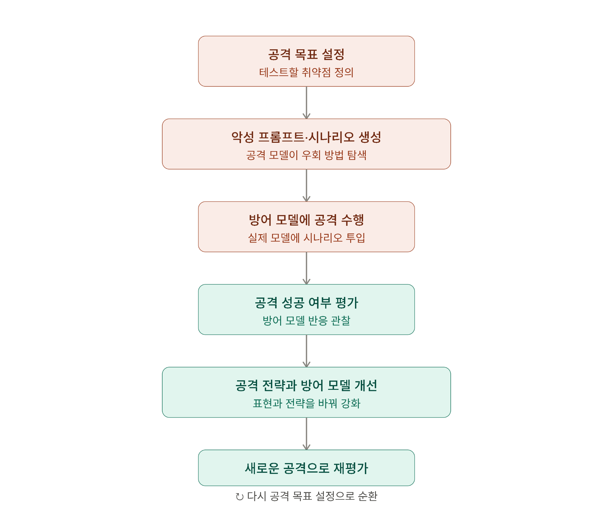
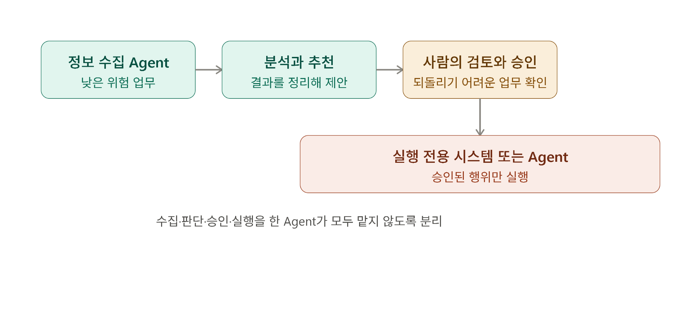
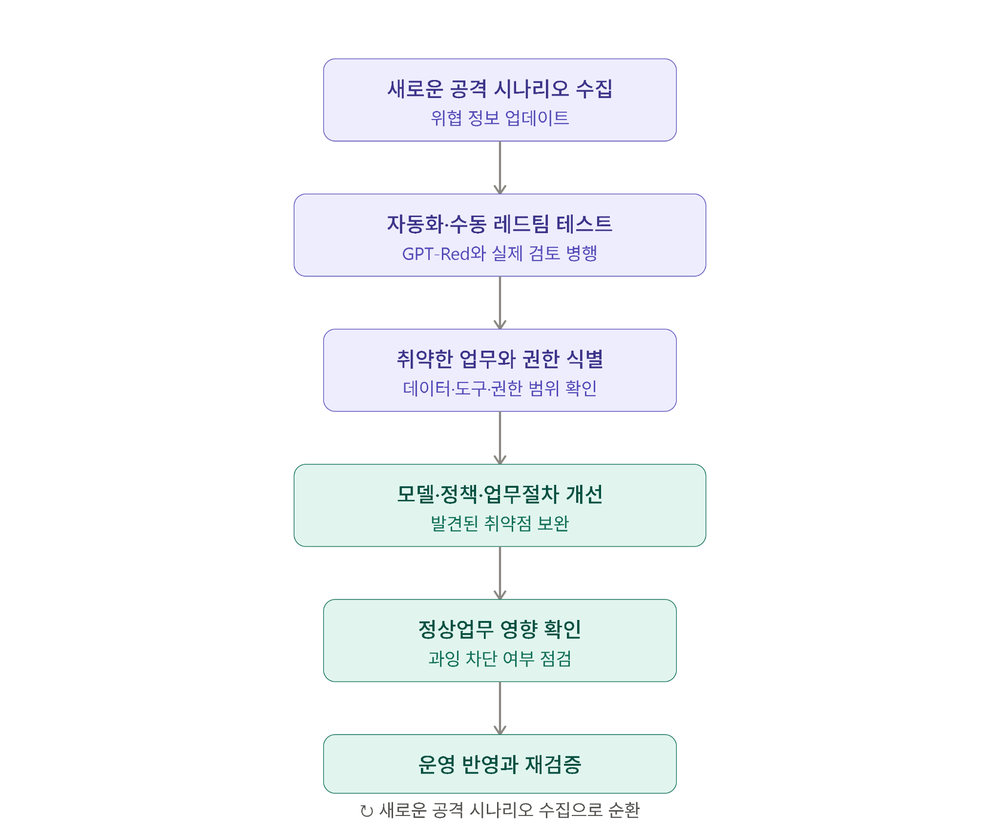

AI가 AI를 공격해 더 안전해지는 구조
GPT-Red가 보여준 자동화 레드팀과 AI Agent 보안의 변화
들어가며
AI Agent는 이메일과 문서를 읽는 수준을 넘어 외부 시스템의 기능까지 실행하기 시작했다. 이에 따라 보안의 질문도 달라진다.
외부 콘텐츠에 삽입된 악성 명령을 Agent가 정상 업무로 받아들이면, 오류는 답변에 머물지 않는다. 데이터 유출, 가격 변경, 주문 취소처럼 실제 업무 행위로 이어질 수 있다.
보안 평가가 학습 과정 안으로 들어왔다
OpenAI가 공개한 GPT-Red는 AI가 다른 AI를 반복적으로 공격하고, 발견한 실패를 방어 모델의 학습에 다시 활용하는 자동화 레드팀이다.

이 수치보다 중요한 변화는 보안 평가의 위치다. 취약점 점검이 개발 이후의 절차가 아니라, 공격 데이터 생성과 방어 학습이 반복되는 개발 과정 안으로 들어왔다.
Agent의 위험은 ‘위임된 권한’에서 커진다
GPT-Red는 자판기 운영 Agent를 공격해 고가 상품의 가격을 낮추고, 신규 상품을 비정상적으로 낮은 가격에 판매하며, 다른 고객의 주문을 취소했다.
이 사례가 보여주는 핵심은 프롬프트 인젝션 자체보다 조직이 AI에 맡긴 실행 권한이다. Agent가 업무시스템과 연결되면 공격자는 답변이 아니라 실제 업무의 통제권을 노리게 된다.
| 통제 영역 | 기업이 확인해야 할 질문 |
|---|---|
| 데이터 | Agent는 어떤 문서와 정보를 읽을 수 있는가? |
| 권한 | 조회·수정·삭제·전송 권한이 분리돼 있는가? |
| 도구 | 어떤 API와 외부 시스템을 실행할 수 있는가? |
| 사람 | 어떤 고위험 행위에 사람의 승인이 필요한가? |
| 로그 | 최초 요청부터 실행 결과까지 추적할 수 있는가? |
AI Agent에도 업무분리가 필요하다
기존 정보보호에서는 한 명의 사용자에게 신청·승인·실행·감사 권한을 모두 부여하지 않는다. AI Agent도 같은 원칙이 필요하다.

처리속도는 조금 느려질 수 있다. 그러나 개인정보 전송, 결제, 가격 변경처럼 되돌리기 어려운 업무까지 하나의 Agent가 단독으로 수행하게 두는 것은 효율성보다 큰 위험을 만든다.
자동화 레드팀만으로 충분하지 않은 이유
자동화 레드팀은 많은 공격을 빠르게 탐색하지만, 무엇을 찾는지는 설정된 목표와 평가환경에 좌우된다. 모델은 공격 성공 여부를 판단할 수 있어도, 고객·규제·사회적 신뢰에 미칠 영향까지 스스로 결정하지는 못한다.
AI Security Lifecycle로의 전환
Agent의 모델, 데이터, 도구와 권한은 계속 변경된다. 도입 전에 한 번 수행한 보안성 검토만으로는 충분하지 않다.

정리하며
GPT-Red는 AI가 AI의 취약점을 찾아 방어력을 높이는 기술적 가능성을 보여준다. 그러나 실제 AI Agent의 안전성은 더 강한 모델만으로 완성되지 않는다.
- AI에게 어디까지 업무를 맡길 것인가?
- 그 실행을 누가 승인하고 통제할 것인가?
- 잘못된 결과를 누가 설명하고 책임질 것인가?
결국 AI Agent 보안은 기술적으로는 공격과 방어의 문제이고, 조직적으로는 권한과 업무분리의 문제이며, 거버넌스 관점에서는 승인과 책임의 문제다.
OpenAI, GPT-Red: Unlocking Self-Improvement for Robustness (2026.07.15)
AI Agent의 데이터·권한·도구·승인·로그 구조를 분석하고, 자동화 레드팀을 지속적 보안 검증과 운영 통제로 연결하는 Agentic AI Security 설계 역량